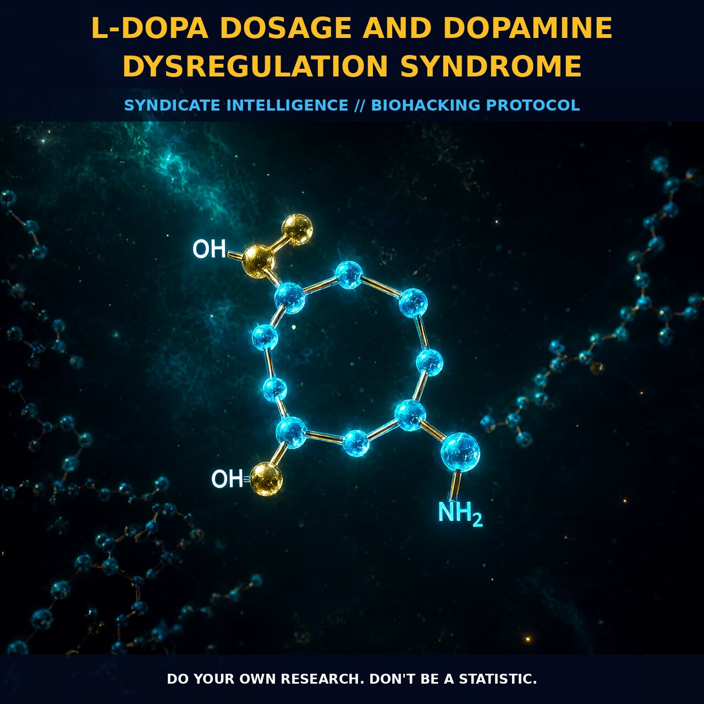

L-DOPA Dosage Dynamics: Mitigating Dopamine Dysregulation Syndrome

1. The Biochemical Architecture of Dopamine
Dopamine serves as the primary neurotransmitter within the catecholamine and phenethylamine families, governing a complex matrix of rewarding pathways, motivational drive, motor control, and hormonal secretion. Its synthesis is not random but follows a precise biochemical cascade: phenylalanine converts to tyrosine, which is then processed by the enzyme tyrosine hydroxylase to produce L-DOPA. This step is rate-limiting, acting as the critical gatekeeper for dopamine formation.
This L-DOPA serves as the direct precursor for dopamine, which subsequently oxidizes into noradrenaline and finally adrenaline. Crucially, supplemented L-DOPA crosses the blood-brain barrier effectively, providing a more direct route to central nervous system modulation than its upstream amino acid precursors. This efficiency makes it a potent tool for biohackers seeking to bypass slower metabolic conversions.
2. Navigating the Inverted-U Dose Response
The therapeutic window for dopamine is narrow and governed by an inverted-U dose-response relationship. Low-to-moderate stimulation of D1 receptors in prefrontal neurons supports working memory and cognitive clarity, creating a state of focused alertness. However, excessively high levels disrupt normal function, leading to a collapse in signal-to-noise ratio.
This disruption manifests as Dopamine Dysregulation Syndrome (DDS), a condition characterized by pathological overstimulation where the body’s internal regulatory mechanisms are overwhelmed. Clinically observed in Parkinson’s patients on high-dose L-DOPA therapy and in individuals with schizophrenia or ADHD, DDS indicates that the root cause is often not a lack of dopamine, but rather the intensity and duration of dopaminergic signaling beyond optimal physiological parameters.
3. Strategic Biological Leverage
The critical leverage point for optimizing dopamine without triggering DDS lies in stimulating the early stages of synthesis rather than directly flooding the receptors with high doses of pure L-DOPA or synthetic dopamine. By bypassing the natural rate-limiting conversion by tyrosine hydroxylase, one risks altering receptor sensitivity and causing behavioral outputs to become dysregulated.
These symptoms of overstimulation are systemic and profound, including pathological gambling, hypersexuality, compulsive eating, and increased aggressiveness. They reflect a breakdown in the balance between motor control circuits and reward pathways, driven by the sheer volume of catecholamines saturating available receptors.
4. Individual Variability and Cofactor Support
Individual metabolic variations play a decisive role in how much synaptic dopamine accumulates before dysregulation sets in. Genetic variations in the CYP450 system in the liver influence the metabolism of these compounds, creating wide inter-individual variability in bioavailability and clearance rates. Therefore, relying solely on L-DOPA alone can lead to side effects as the precursor pool expands rapidly.
Supporting the synthesis stage allows the body’s endogenous regulatory mechanisms to modulate release more gracefully. This distinction is vital for biohackers seeking sustained cognitive and motivational enhancements without tipping into the manic or compulsive states associated with dopamine excess. Supplementing with cofactors like tetrahydrobiopterin ensures efficient enzymatic function, preventing precursor buildup and abrupt synaptic spikes.
5. Protocol Implementation
For those looking to exploit this mechanism, starting with L-Tyrosine offers a safer entry point by feeding the substrate directly into the tyrosine hydroxylase reaction step, minimizing the risk of sudden receptor saturation. The typical dosage ranges from 500 mg to 2 grams per day, a range that sharpens memory and boosts mood without overwhelming the system.
If more direct dopaminergic action is required, L-Dopa (L-3,4-dihydroxyphenylalanine) derived from Mucuna Pruriens is an effective option. It enhances libido and testosterone while providing a stronger push on dopamine synthesis than tyrosine alone, but dosing must be titrated carefully to avoid the high-dose pitfalls seen in clinical populations.
Prostar Life Hack
Tiered Titration Strategy: Begin with L-Tyrosine (500-1000mg) to stabilize baseline synthesis. If cognitive demand increases, introduce Mucuna-derived L-Dopa in low doses (<50mg) rather than jumping to high doses. Always monitor for signs of 'dopamine hangover'—irritability or compulsive behavior—which signal you have passed the peak of the inverted-U curve. Pair with tetrahydrobiopterin to ensure enzymatic efficiency and prevent receptor desensitization.
Prostar Life Hack
Start with L-Tyrosine (500-1000mg) for stable synthesis, then introduce low-dose Mucuna-derived L-Dopa as needed. Monitor for irritability or compulsive behaviors as signs of passing the peak dopamine threshold, and pair with tetrahydrobiopterin to prevent receptor desensitization.
[ AUTHOR: LEAD TECHNICAL RESEARCHER ]